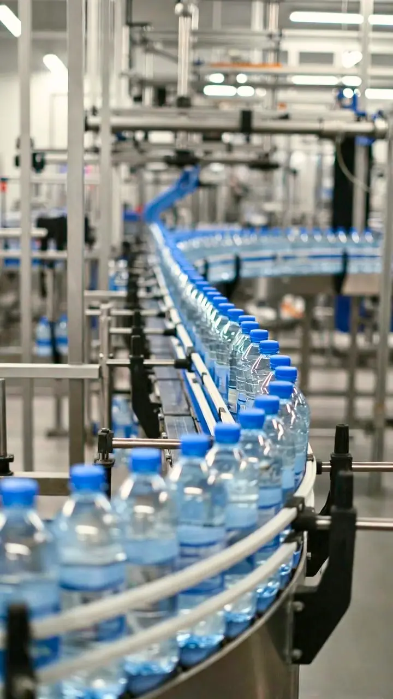
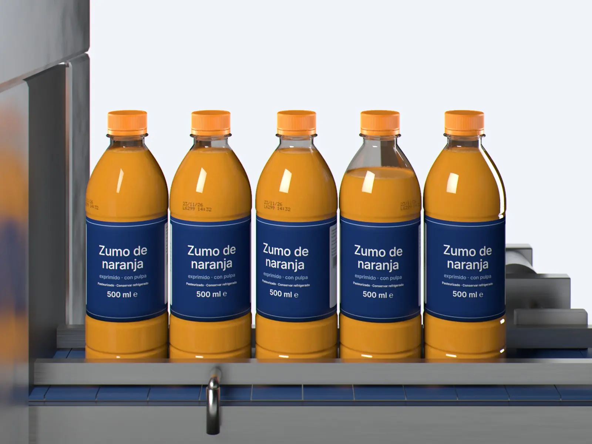
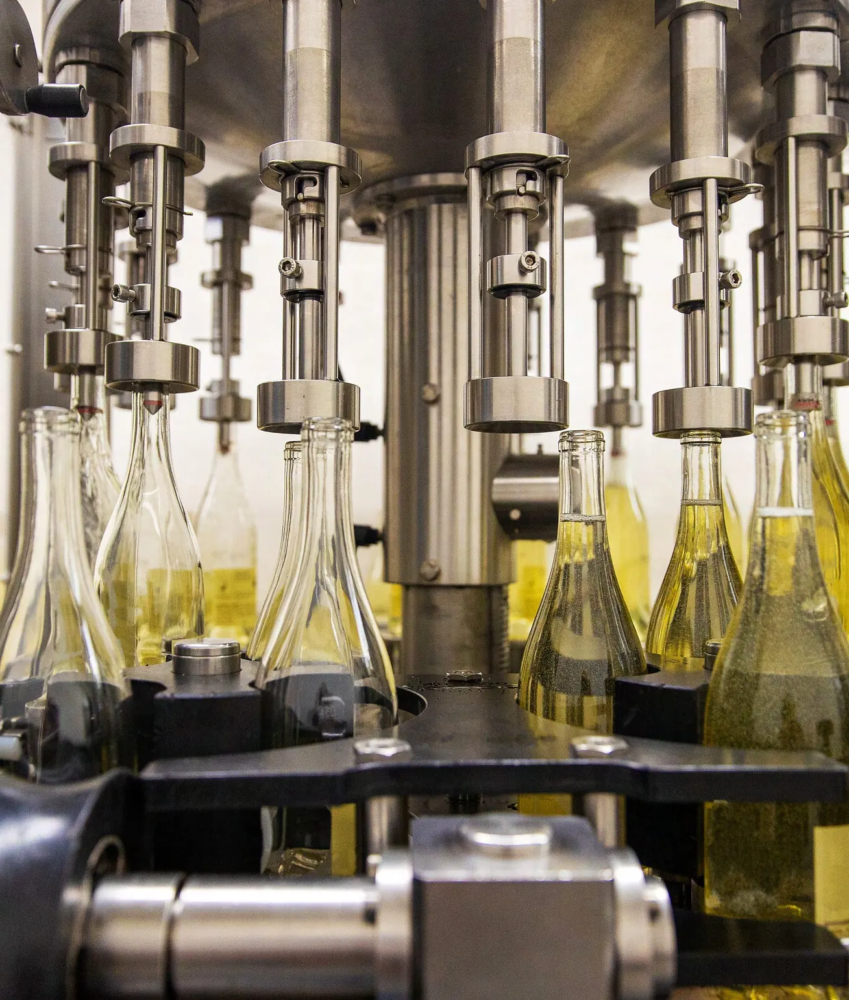
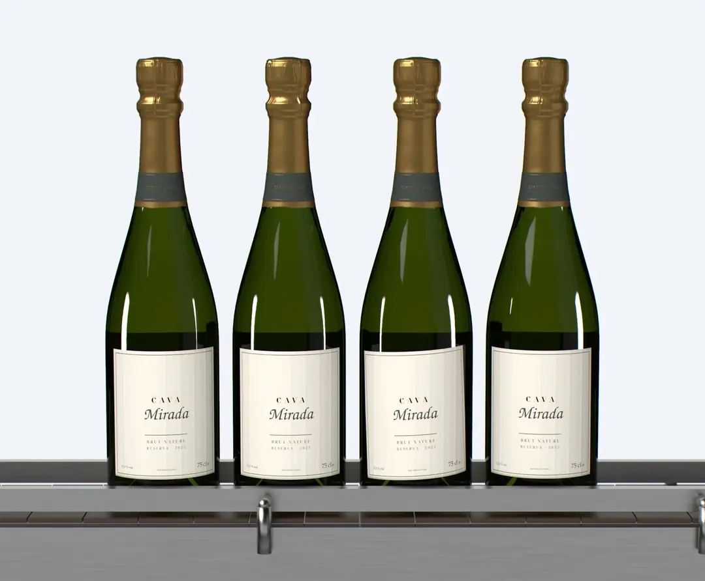
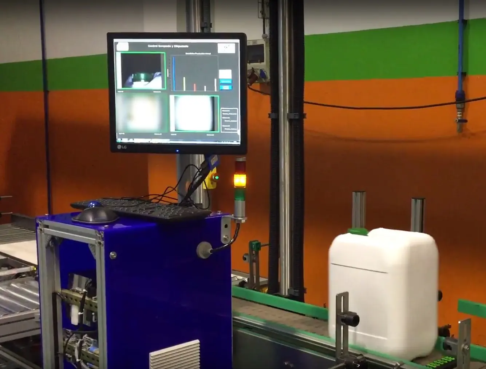

Agua, zumos, vino y cava
En AIS Vision Systems ayudamos a los productores de bebidas a asegurar la calidad de sus envases y de su etiquetado, con inspección en tiempo real de botellas de vidrio y plástico.

Envases
- Botellas de vidrio y de PET
- Garrafas con asa
- Tapón roscado, precinto y cápsula
- Etiquetas, collarines y marcajes impresos

Zumos

Vino

Cava

Garrafas